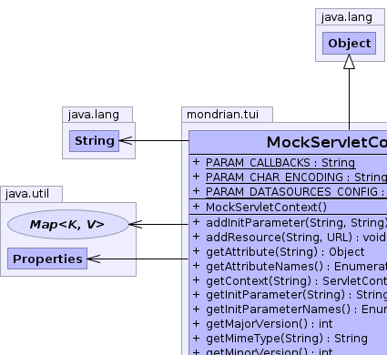
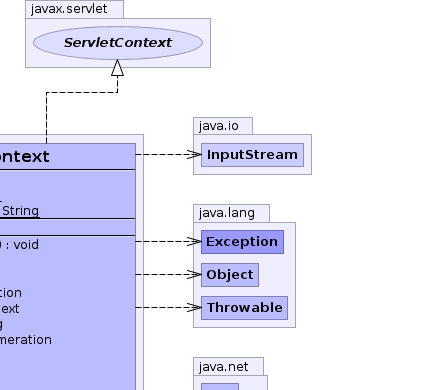
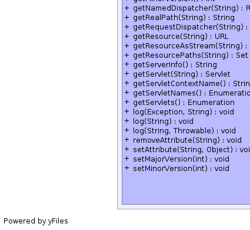
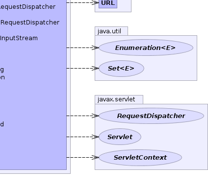

public class MockServletContext extends Object implements javax.servlet.ServletContext
ServletContext where just
enough is present to allow for communication between Mondrian's
XMLA code and other code in the same JVM.
Currently it is used in both the CmdRunner and in XMLA JUnit tests. If you need to add to this implementation, please do so.
|  |  |
|  |  |
| Modifier and Type | Field and Description |
|---|---|
static String |
PARAM_CALLBACKS |
static String |
PARAM_CHAR_ENCODING |
static String |
PARAM_DATASOURCES_CONFIG |
| Constructor and Description |
|---|
MockServletContext() |
| Modifier and Type | Method and Description |
|---|---|
void |
addInitParameter(String name,
String value) |
void |
addResource(String name,
URL url) |
Object |
getAttribute(String s) |
Enumeration |
getAttributeNames()
Returns an Enumeration containing the attribute names available within
this servlet context.
|
javax.servlet.ServletContext |
getContext(String s)
Returns a ServletContext object that corresponds to a specified URL on
the server.
|
String |
getInitParameter(String name)
Returns a String containing the value of the named context-wide
initialization parameter, or null if the parameter does not exist.
|
Enumeration |
getInitParameterNames()
Returns the names of the context's initialization parameters as an
Enumeration of String objects, or an empty Enumeration if the context has
no initialization parameters.
|
int |
getMajorVersion()
Returns the major version of the Java Servlet API that this servlet
container supports.
|
String |
getMimeType(String s)
Returns the MIME type of the specified file, or null if the MIME type is
not known.
|
int |
getMinorVersion()
Returns the minor version of the Servlet API that this servlet container
supports.
|
javax.servlet.RequestDispatcher |
getNamedDispatcher(String s)
Returns a RequestDispatcher object that acts as a wrapper for the named
servlet.
|
String |
getRealPath(String path)
Returns a String containing the real path for a given virtual path.
|
javax.servlet.RequestDispatcher |
getRequestDispatcher(String s)
Returns a RequestDispatcher object that acts as a wrapper for the
resource located at the given path.
|
URL |
getResource(String name)
Returns a URL to the resource that is mapped to a specified path.
|
InputStream |
getResourceAsStream(String s)
Returns the resource located at the named path as an InputStream object.
|
Set |
getResourcePaths(String s) |
String |
getServerInfo()
Returns the name and version of the servlet container on which the
servlet is running.
|
javax.servlet.Servlet |
getServlet(String s) |
String |
getServletContextName() |
Enumeration |
getServletNames() |
Enumeration |
getServlets() |
void |
log(Exception exception,
String s)
Deprecated.
Method log is deprecated
|
void |
log(String s)
Writes the specified message to a servlet log file, usually an event log.
|
void |
log(String s,
Throwable throwable)
Writes an explanatory message and a stack trace for a given Throwable
exception to the servlet log file.
|
void |
removeAttribute(String s)
Removes the attribute with the given name from the servlet context.
|
void |
setAttribute(String s,
Object obj)
Binds an object to a given attribute name in this servlet context.
|
void |
setMajorVersion(int majorVersion) |
void |
setMinorVersion(int minorVersion) |
public static final String PARAM_DATASOURCES_CONFIG
public static final String PARAM_CHAR_ENCODING
public static final String PARAM_CALLBACKS
public MockServletContext()
public javax.servlet.ServletContext getContext(String s)
getContext in interface javax.servlet.ServletContextpublic int getMajorVersion()
getMajorVersion in interface javax.servlet.ServletContextpublic int getMinorVersion()
getMinorVersion in interface javax.servlet.ServletContextpublic String getMimeType(String s)
getMimeType in interface javax.servlet.ServletContextpublic Set getResourcePaths(String s)
getResourcePaths in interface javax.servlet.ServletContextpublic URL getResource(String name) throws MalformedURLException
getResource in interface javax.servlet.ServletContextMalformedURLExceptionpublic InputStream getResourceAsStream(String s)
getResourceAsStream in interface javax.servlet.ServletContextpublic javax.servlet.RequestDispatcher getRequestDispatcher(String s)
getRequestDispatcher in interface javax.servlet.ServletContextpublic javax.servlet.RequestDispatcher getNamedDispatcher(String s)
getNamedDispatcher in interface javax.servlet.ServletContextpublic javax.servlet.Servlet getServlet(String s) throws javax.servlet.ServletException
getServlet in interface javax.servlet.ServletContextjavax.servlet.ServletExceptionpublic Enumeration getServlets()
getServlets in interface javax.servlet.ServletContextpublic Enumeration getServletNames()
getServletNames in interface javax.servlet.ServletContextpublic void log(String s)
log in interface javax.servlet.ServletContextpublic void log(Exception exception, String s)
log in interface javax.servlet.ServletContextpublic void log(String s, Throwable throwable)
log in interface javax.servlet.ServletContextpublic String getRealPath(String path)
getRealPath in interface javax.servlet.ServletContextpublic String getServerInfo()
getServerInfo in interface javax.servlet.ServletContextpublic String getInitParameter(String name)
getInitParameter in interface javax.servlet.ServletContextpublic Enumeration getInitParameterNames()
getInitParameterNames in interface javax.servlet.ServletContextpublic Object getAttribute(String s)
getAttribute in interface javax.servlet.ServletContextpublic Enumeration getAttributeNames()
getAttributeNames in interface javax.servlet.ServletContextpublic void setAttribute(String s, Object obj)
setAttribute in interface javax.servlet.ServletContextpublic void removeAttribute(String s)
removeAttribute in interface javax.servlet.ServletContextpublic String getServletContextName()
getServletContextName in interface javax.servlet.ServletContextpublic void setMajorVersion(int majorVersion)
public void setMinorVersion(int minorVersion)
public void addResource(String name, URL url)
public void addInitParameter(String name, String value)